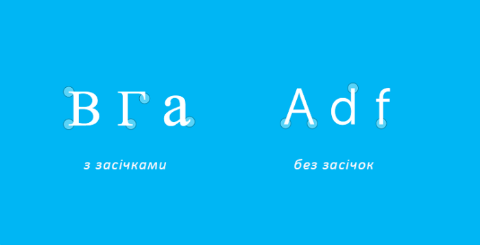

Доволі часто бувають ситуації коли потрібно якомога оперативніше підібрати шрифт для таблиці, документу, презентації, оголошення чи e-mail розсилки. Це не так просто, як здається на перший погляд. У цій статті ми розповімо які шрифти бувають та для чого вони? Де знайти доречний шрифт та як його правильно використовувати?
Підбір шрифту - це важливо! Він повинен сприяти читанню, бути приємним для сприйняття людського ока та відповідати викладеній інформації. Правильно підібраний шрифт впливає не лише на візуальну складову, але й на сприйняття контенту.
Типи шрифтів
Класифікацій шрифтів існує безліч, проте можна виділити чотири основних:
- Антиква – шрифти з засічками;
- Гротеск – шрифти без засічок;
- Рукописні шрифти – шрифти, що імітують людський почерк;
- Ацидентні – декоративні шрифти для заголовків чи логотипів.
Засічки – це невеличкі штрихи на кінці літери.
Якщо просто, то існують шрифти з засічками, без засічок та інші
Довгі тексти зазвичай пишуть шрифтами з засічками
«Якщо текст довгий, то він краще сприймається шрифтом з засічками», — таке правило ви, скоріш за все, чули не один раз. Цей «закон» пов’язаний з тим, що антиква з’явилася раніше та активно використовувалась у друкованій продукції. Але частіш за все проблеми з чіткістю читання пов’язані не з типом самого шрифту, а з його неправильним використанням, тобто з питанням «як?», а не «що?».
Шрифти з засічками й досі лідирують у використанні для статей або книг. Найпопулярніші з них:Times New Roman, Georgia, Courier New.
Для коротких текстів та великих розмірів підійдуть гротески
Гротески молодші шрифтів із засічками, тому активно використовуються на сайтах та в інтерфейсах. Вважається, що шрифти без засічок краще читаються на екрані, — це ще один «закон» поліграфії перевірений часом.
Гротески асоціюються із сучасністю, вони мінімалістичні та чудово виглядають у заголовках та логотипах. Проте, в печатних книгах та статтях їх теж використовують.
Сучасна література все частіше друкується з використанням таких шрифтів як: Verdana, Tahoma, Montserrat, Open Sans та Helvetica. Про останній шрифт було навіть відзнято фільм.
Не зменшуйте інтервали між рядками
Достатня ширина між стрічками дозволяє користувачу легко прочитати та засвоїти матеріал. На жаль, про це часто забувають, намагаючись вмістити якомога більше тексту на сторінці зменшуючи міжрядкову відстань. Потрібно надати читачам якомога зрозуміліший контент, а не текст заради тексту. Як правило, для хорошої читабельності відстань між рядками має бути від 130 до 150%, при цьому потрібно уникати надто великої відстані так, як читачу буде складно переміщатися з рядка на рядок.
Інтервал 100% означає, що розмір шрифту дорівнює ширині між рядками, наприклад, текст написаний 18-им шрифтом та 18-им інтервалом (в пунктах – одиниця виміру розмір шрифту).
Підкреслюйте акценти
Основними інструментами акцентування в тексті являється розмір шрифту, колір, гарнітура (до прикладу, курсив) та насиченість (до прикладу, напівжирний). Все це потрібно, аби звернути увагу читача на важливих моментах в тексті. В залежності від ситуації використовуйте один чи декілька з цих варіантів, головне, не перегнути палку.
До прикладу, текст, який був написаний прописними літерами не підійде для довгого читання.
Порада: використовуйте шрифти з великою кількістю гарнітур, від тонкого до жирного – так вам буде простіше підібрати потрібний шрифт для виділення або ж використати одразу декілька в презентації. До прикладу, шрифт Montserrat має 18 гарнітур з насиченістю та нахилом.
Завантажуйте з перевірених джерел
Існує низка безкоштовних, платних та піратських шрифтів. Найпопулярніші з них зібрані в бібліотеці Google Fonts. Великий вибір кирилиці та латиниці на Webfonts. За допомогою фільтрів безкоштовні шрифти можна відшукати навіть на MyFonts. До речі, якщо Ви шукаєте певний шрифт, але не знаєте його назву, сервіс WhatTheFont може допомогти вам у пошуках. Він здатен з високою ймовірністю визначити шрифт по картинці.
Висновки
Запам’ятайте:
- Використовуйте шрифти із засічками для довгого тексту та без засічок для короткого тексту чи навпаки. Обирайте потрібний вам варіант на основі вашої ситуації чи уподобань.
- Обирайте комфортний для читання розмір шрифту для основного тексту та робіть акцент там, де це необхідно.
- Використання темного шрифту на світлому фоні підвищує сприйняття інформації.
- Між фоном та кольором шрифту найголовніше – це достатній контраст.
- Важливо дотримуватися нормального міжрядкового інтервалу (130-150%).
- Робіть акцент за допомогою гарнітур та насиченості шрифту.
- За допомогою кольору можна привернути увагу до певного повідомлення у тексті.
- Ніколи не пишіть текст ЛИШЕ ВЕЛИКИМИ ЛІТЕРАМИ.
- Обирайте шрифт, відповідний до вашої інформації.
- Поєднуйте гротеск для заголовка та антикву для основного контенту.
Дотримуйтесь цих правил і у вас буде грамотний збалансований текст, який приємно буде читати навіть закінченому перфекціоністу.